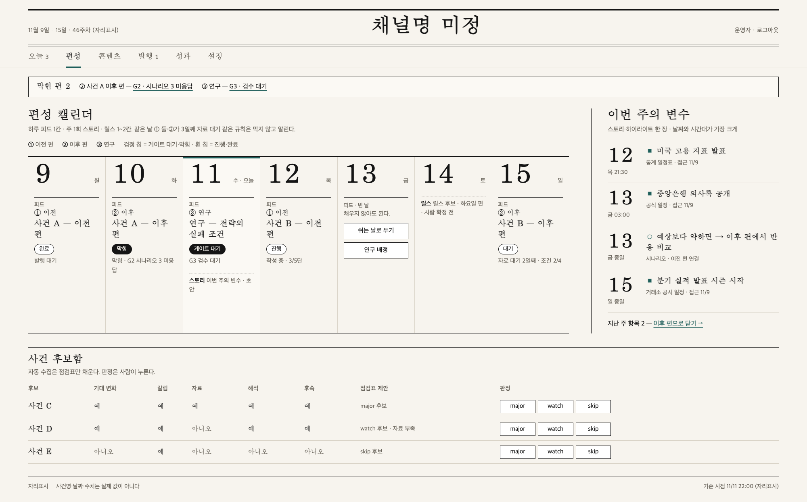
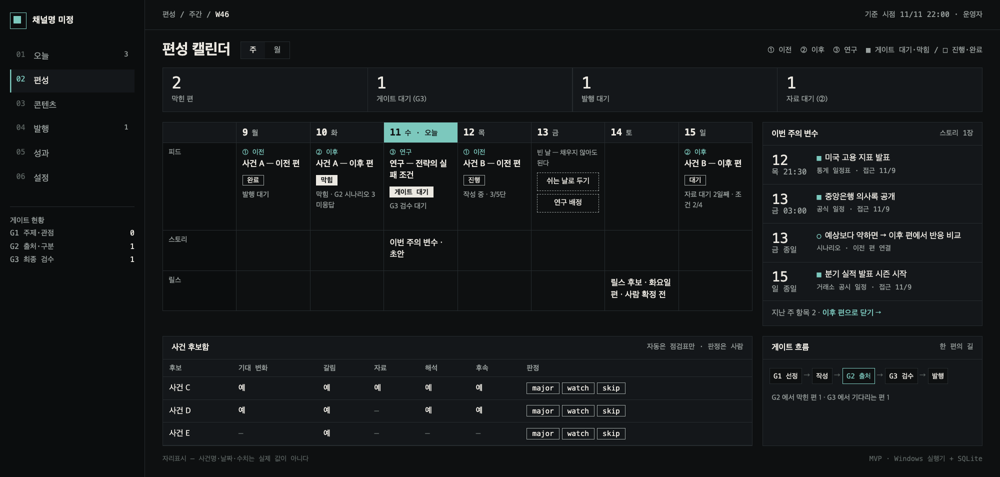
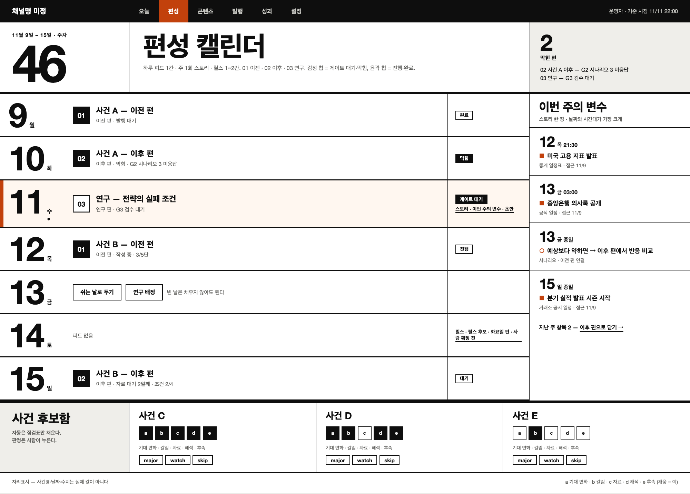

「더 그럴듯하고 간지나는, 깔끔한」 운영 대시보드를 위해 Pinterest(읽기 전용)에서 후보 402개를 훑고 48개를 골라 공통 패턴을 정리했다. 세 방향은 같은 화면(편성 캘린더 + 이번 주의 변수 + 사건 후보함)을 같은 자리표시 데이터로 그렸다. 대시보드 코드는 바꾸지 않았다.
사건명·날짜·수치는 자리표시이며 실제 값이 아니다. 시안은 시스템 서체로 그린 정적 화면이다(PNG 2000 px 폭 = 1600 px × 1.25).
moodboard.html — 선별 48개의 썸네일 · 핀 링크 · 원 출처 링크(21개에 있음) · 주제·근거 안 필터. 기록 원본은 pins.json.

조간 신문 편집국. 종이색 · 세리프 · 가는 선 · 큰 세리프 날짜 · 청록 1색. 시각 시스템 A 의 앱 화면 확장.

다크 고밀도 데스크. 어두운 바탕 · 모노 숫자 · 얇은 선 · 밝힌 청록 1색. A 의 청록 + 새 축(다크).

숫자와 굵은 타이포가 만드는 구조. 흰 바탕 · 굵은 산세리프 · 큰 날짜 · 번트오렌지 1색. 시각 시스템 B 의 확장.
| 안 1 Broadsheet | 안 2 Terminal | 안 3 Swiss | |
|---|---|---|---|
| 인상 | 차분함·안목·신뢰감 | 전문가 도구, 「간지」 | 선명함·접근성, 첫인상 임팩트 |
| 글자 대비(계산값) | 본문 16.6 · 보조 5.3 · 강조 6.7 | 본문 15.7 · 보조 7.2 · 강조 9.9 | 본문 19.3 · 보조 6.8 · 강조 5.2 |
| A·B 와의 관계 | A 그대로(색·서체 계열) | A 의 청록을 밝혀 쓴 다크 | B 그대로(색·번호 블록) |
| 약점 | 첫인상 임팩트가 가장 약함 | 「금융 앱」 인상 · 카드 표지와 톤 차이 | 「안목」이 약함 · 한 화면 정보량 감소 |
| 근거 레퍼런스 | 25개 | 13개 | 15개 |
분석 문서: 저장소 docs/design/references/analysis.md